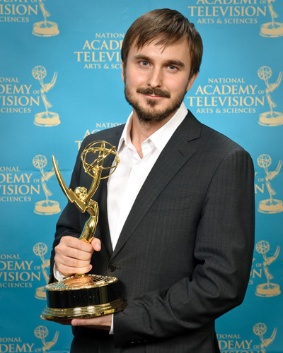
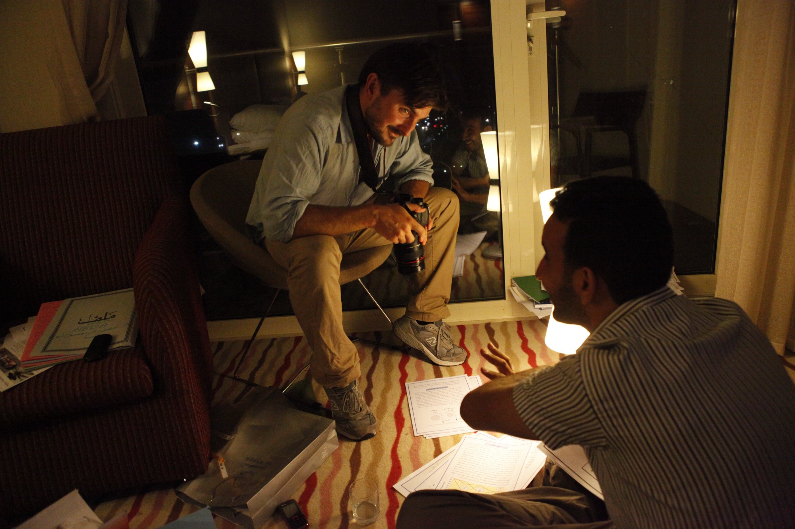
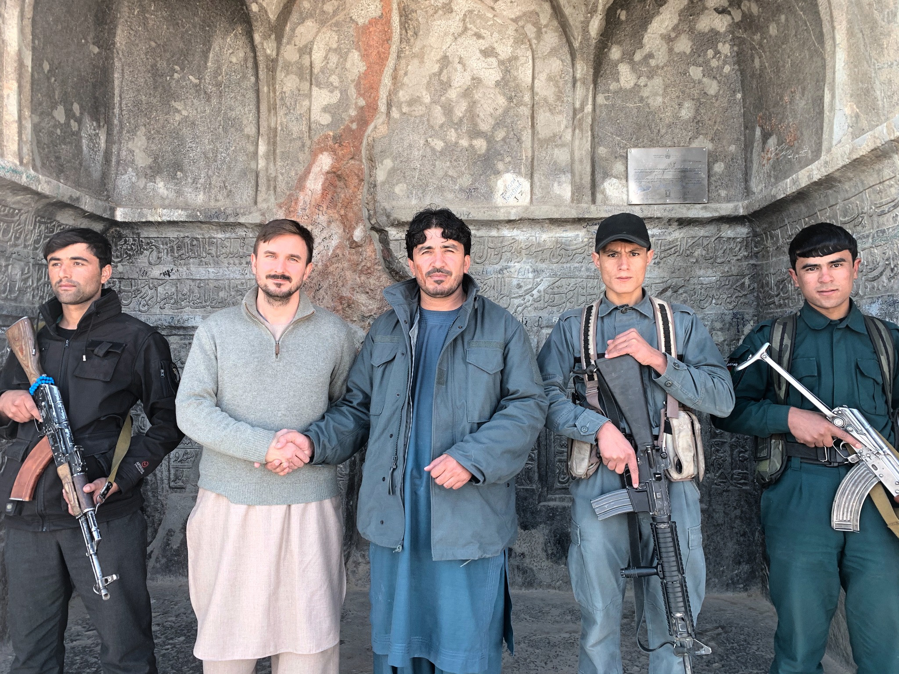
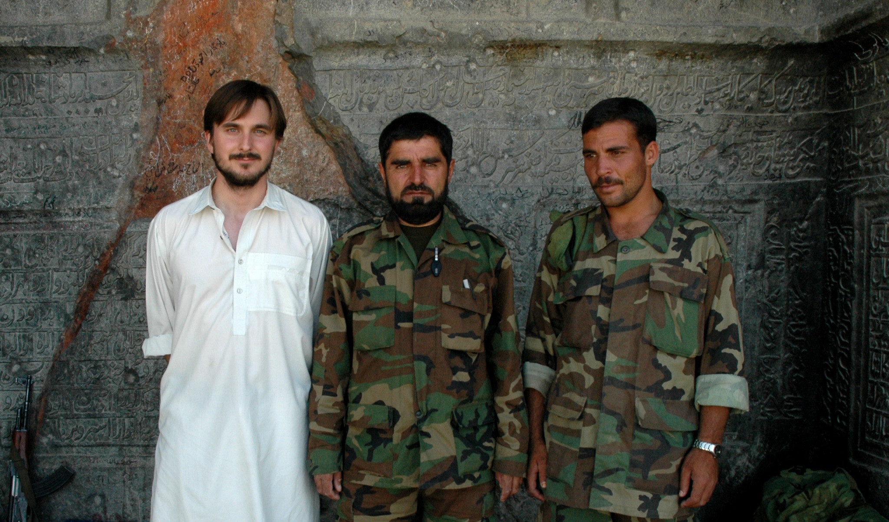

Journalist, author and analyst, based in Rome. I work on public-interest journalism and research, with a focus on conflict and international affairs.
Previously, I was a foreign correspondent for The Globe and Mail and worked with the United Nations and International Crisis Group.
Selected work
Talking to the Taliban

With the Emmy, 2009.
I worked with an Afghan journalist to film interviews with 42 Taliban fighters, using the same set of questions. We had the recordings translated and compared the answers. The interviews showed how local and tribal disputes shaped the insurgency. The resulting Globe and Mail series won an Emmy Award in 2009.
I drew on years of reporting in southern Afghanistan to write about the war from the ground up. Alongside time with military forces, I relied on Afghan translators, guides and residents to understand life beyond the bases. The book examines how corruption, local power struggles and the drug economy undermined the international mission. It won the 2013 Hilary Weston Writers’ Trust Prize for Nonfiction, then Canada’s richest annual prize for non-fiction.
Afghan detainees
Photograph to come
In 2007, I gained permission to interview prisoners in Kandahar who had been captured by Canadian troops. They described torture after being transferred to Afghan custody. Canada subsequently signed a new agreement with Afghanistan allowing closer monitoring of transferred prisoners. The Globe and Mail’s coverage shared the 2007 Michener Award for public-service journalism with La Presse.
Libya’s paper trail

Reviewing documents from the former Gaddafi regime. Tripoli, 2011.
For Ghosts of Afghanistan, I returned to people and places I had known during the war. Interviews with officials, Taliban leaders and women in cities and villages showed how differently Afghans experienced the conflict. I co-wrote the film with Julian Sher and Natalie Dubois. We shared the 2022 Canadian Screen Award for documentary writing, one of three awards the film received.
Research and policy

Kandahar, 2019.

The same outpost, 2005.
I first reported from Kandahar in 2005 and kept returning as a researcher. At International Crisis Group, I combined fieldwork and interviews with analysis of Afghanistan’s politics and economy. After the Taliban returned to power, our work examined how economic isolation was deepening the humanitarian crisis. I presented recommendations to a U.S. Senate Foreign Relations subcommittee in 2022.